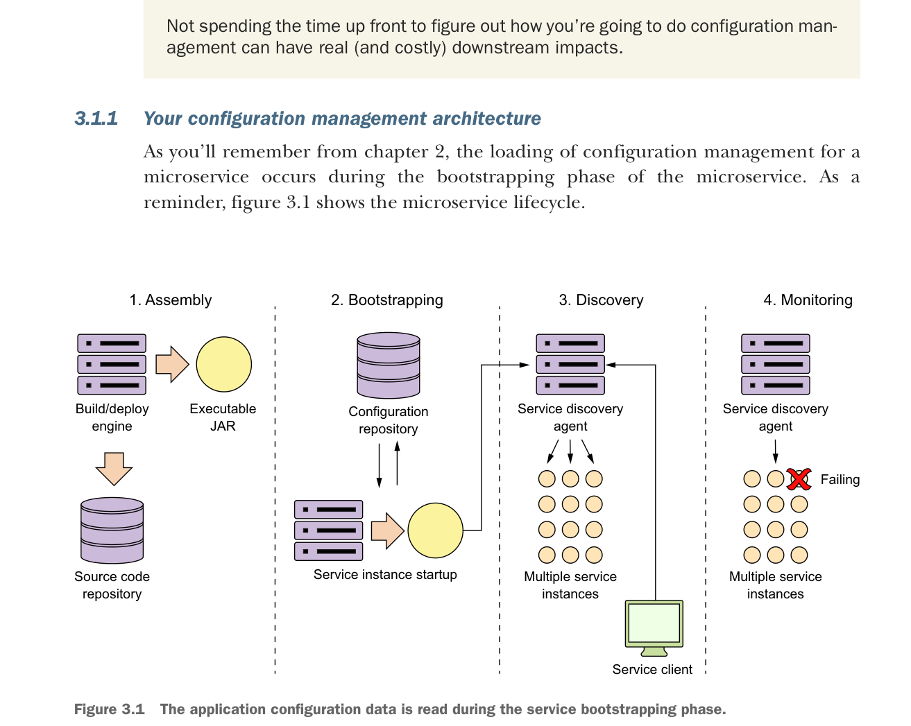

3.1.1 Your configuration management architecture
As you’ll remember from chapter 2, the loading of configuration management for a microservice occurs during the bootstrapping phase of the microservice. As a reminder, figure 3.1 shows the microservice lifecycle.

The application configuration data is read during the service bootstrapping phase.
Let’s take the four principles we laid out earlier in section 3.1 (segregate, abstract, centralize, and harden) and see how these four principles apply when the service is bootstrapping. Figure 3.2 explores the bootstrapping process in more detail and shows how a configuration service plays a critical role in this step.